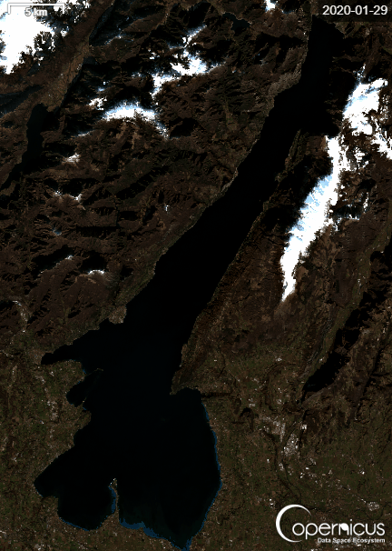

Capitolo I
Lago di Garda
Il più grande lago italiano è anche un termometro climatico ed ecologico. Dopo decenni di pressione antropica, dal 2003 in poi i dati raccontano una graduale ripresa.


Sentinel-2 L2A · Copernicus Data Space Ecosystem
Fosforo totale
È il principale indicatore dell'inquinamento da scarichi civili e del rischio di eutrofizzazione. Secondo ARPAV, il trend di crescita ‘tende ad arrestarsi' dopo l'attivazione del by-pass del collettore tra il 2003 e il 2004.
| Periodo | Fosforo medio (µg/L) | Stato del lago |
|---|---|---|
| 2000–2002 | ≈ 22–25 | Pre by-pass del collettore: trend in crescita |
| 2003–2006 | ≈ 19–23 | Avvio del by-pass, prime riduzioni |
| 2007–2010 | ≈ 17–21 | Lieve miglioramento, oscillazioni stagionali |
| 2011–2015 | ≈ 15–20 | Riduzione evidente del carico |
| 2016–2020 | ≈ 13–18 | Stato generalmente buono |
| 2021–2024 | ≈ 12–17 | Qualità discreta, lago meso-oligotrofico |
−40%
Riduzione del fosforo medio nel Garda dal 2000 al 2024
Trasparenza dell'acqua
Misurata con il disco di Secchi. L'aumento della trasparenza indica una riduzione delle alghe e dei nutrienti disponibili in superficie.
| Periodo | Trasparenza media | Lettura ecologica |
|---|---|---|
| 2000–2005 | ≈ 7–9 m | Acqua più ricca di fitoplancton |
| 2006–2010 | ≈ 8–10 m | Lenta ripresa post-by-pass |
| 2011–2015 | ≈ 9–11 m | Disco di Secchi in crescita |
| 2016–2020 | ≈ 10–12 m | Trasparenza stabile / buona |
| 2021–2024 | ≈ 10–13 m | Valori tipici di lago oligotrofico |
+4 m
Trasparenza guadagnata dal disco di Secchi tra il 2000 e il 2024
Stato ecologico (SEL)
L'indice SEL combina fosforo, ossigeno, clorofilla e trasparenza. ARPAV mantiene i dati completi scaricabili per il periodo 2003–2024.
| Anno | Valutazione generale |
|---|---|
| 2003–2010 | Sufficiente / meso-oligotrofico |
| 2011–2015 | Miglioramento graduale |
| 2016–2018 | Buono nelle stazioni profonde |
| 2019–2024 | Prevalentemente buono |
Inquinanti chimici recenti (2017–2024)
I monitoraggi su pesci e biota del lago segnalano la presenza di sostanze persistenti.
- PCB
- Diossine
- Mercurio
- PFOS
- IPA
Metalli in colonna d'acqua (ARPAV 2010–2025)
| Parametro | Valore tipico | Note |
|---|---|---|
| Arsenico totale | ≈ 1 µg/L | Sotto limite di quantificazione |
| Mercurio totale | < 1 µg/L | Non rilevabile in colonna d'acqua |
| Nichel totale | ≈ 2,5 µg/L | Sotto soglia di qualità |
| Rame totale | ≈ 1–1,5 µg/L | Picchi locali in superficie estiva |
| Zinco totale | < 30 µg/L | Tracce, sotto LOQ |
| Piombo totale | < 2 µg/L | Stabile dal 2010 |
Cause principali
- Scarichi urbani e depurazione storicamente insufficiente
- Turismo e urbanizzazione delle coste
- Agricoltura nel bacino
- Traffico stradale e nautico
- Deposizione atmosferica
- Sedimenti storicamente contaminati
Il mixing invernale
L'aumento di clorofilla osservato in dicembre e gennaio nel basso Garda — soprattutto a Sirmione e San Benedetto di Lugana — non è un peggioramento improvviso, ma un fenomeno fisico stagionale.
Estate
Il lago è fortemente stratificato: acqua calda in superficie, acqua fredda e ricca di nutrienti in profondità.
Inverno
Vento e raffreddamento indeboliscono il termoclino: si innesca il rimescolamento verticale, risalgono fosforo e azoto, cresce il fitoplancton.
Nel basso Garda il fenomeno è più evidente: il bacino è meno profondo, l'acqua circola lentamente, i nutrienti antropici sono più abbondanti e i sedimenti vengono risospesi con maggiore facilità.
Fonti
- · ARPAV — Rapporto stato delle acque interne 2020
- · ARPAV — Stato ecologico dei laghi (open data)
- · ARPAV — Qualità chimica dei laghi 2024
- · ARPAV — Inquinanti chimici nella matrice biota
- · Studio sull'evoluzione trofica del Lago di Garda — ResearchGate
- · Gavardo in Movimento — depurazione ed eutrofizzazione del Garda